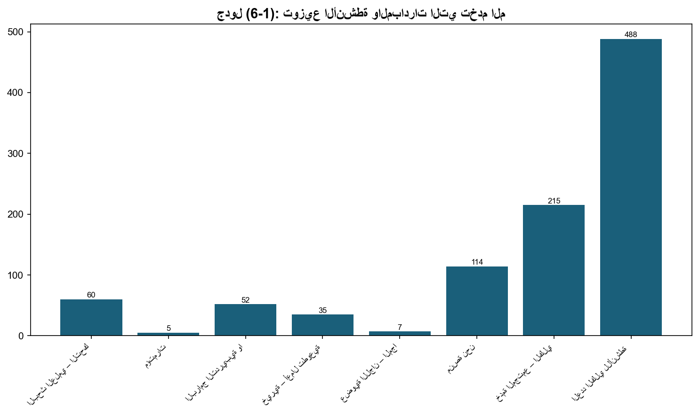

6.1: عدد المشاريع التي تم تنفيذها لتنمية المجتمع المحلي
📝 2 فقرة
📋 1 جدول
📊 1/0 شكل
تولي الجامعة اهتمامًا بالغًا بالعمل الجماعي الموجّه بالسياسات الناظمة المتناغمة مع التوجهات الإستراتيجية لقطاع التعليم العالي، ليقينها بأنه يسهم في ازدهار الوطن ورفعته، وتنمية المجتمع، ورفد السوق المحلية والإقليمية بالخريجين القادرين على حمل الرسالة، وأداء مهماتهم على الوجه الأكمل.
هذا، وتلتزم الجامعة بالمسؤولية المجتمعية المستدامة، بما يسهم في دعم الأبعاد المختلفة للتنمية المستدامة (الاقتصادية، والاجتماعية، والثقافية، والبيئية، والبشرية). وتتحمل الجامعة مسؤوليتها المجتمعية بقيامها بالكثير من الأنشطة والمبادرات التي تخدم المجتمع؛ إذ بلغ عددها في عام (2023/2024) نحو (488) نشاطًا ومبادرة تتضمن رعاية، واستضافة، وتقديم الكثير من الندوات والمؤتمرات وورش العمل، وغيرها. بالمقارنة مع (382) نشاطًا ومبادرة للعام (2022/2023)، ويوضح الجدول الآتي توزيعها حسب طبيعة النشاط.

جدول (6-1): توزيع الأنشطة والمبادرات التي تخدم المجتمع.
📊 8 صف من البيانات
| طبيعة النشاط | العدد |
|---|---|
| البحث العلمي – التحكيم – براءات الاختراع – رسائل ماجستير | 60 |
| مؤتمرات | 5 |
| البرامج التدريبية والتأهيل والدورات، والندوات، والمحاضرات، وورش العمل | 52 |
| خيرية – أعمال تطوعية – أيام طبية - رياضية - إفطار رمضاني – حملة شتوية | 35 |
| عضوية اللجان – المجالس – المجلات | 7 |
| منصة نحن | 114 |
| خدمة المجتمع – الكليات | 215 |
| العدد الكلي للأنشطة التي تعكس المسؤولية المجتمعية | 488 |